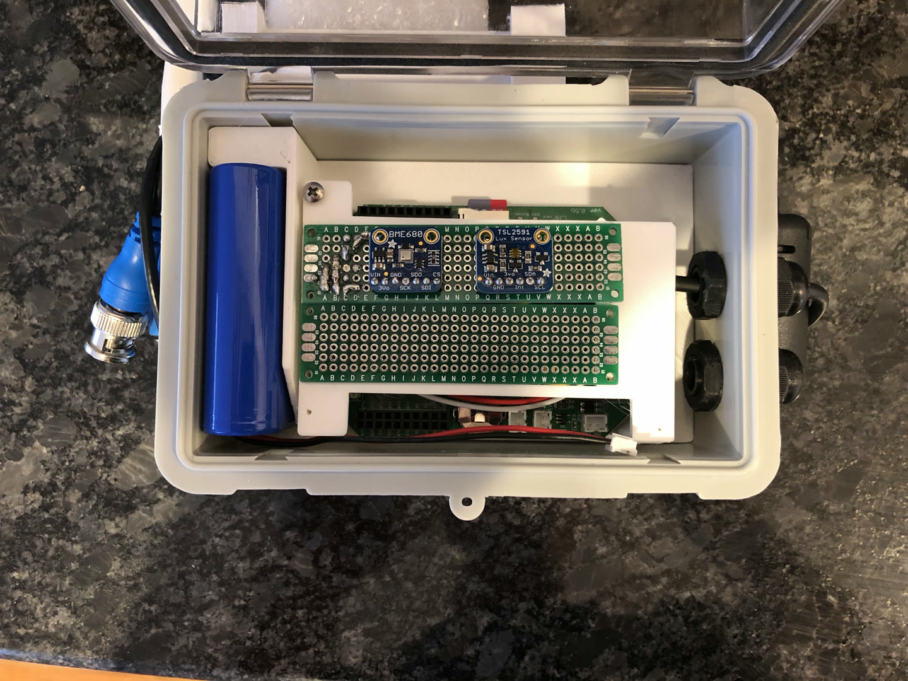
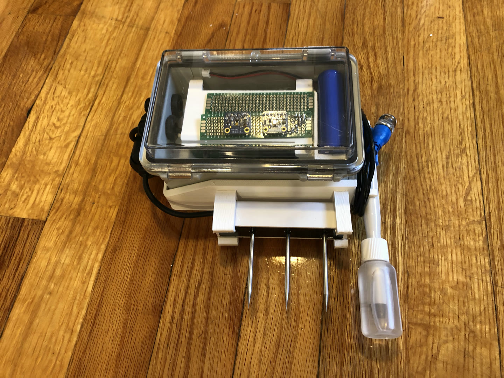
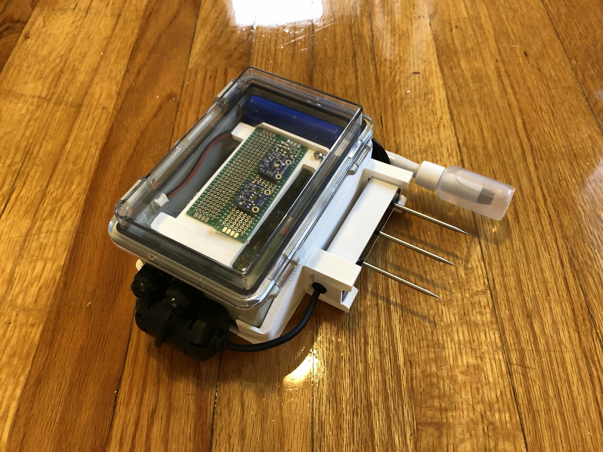
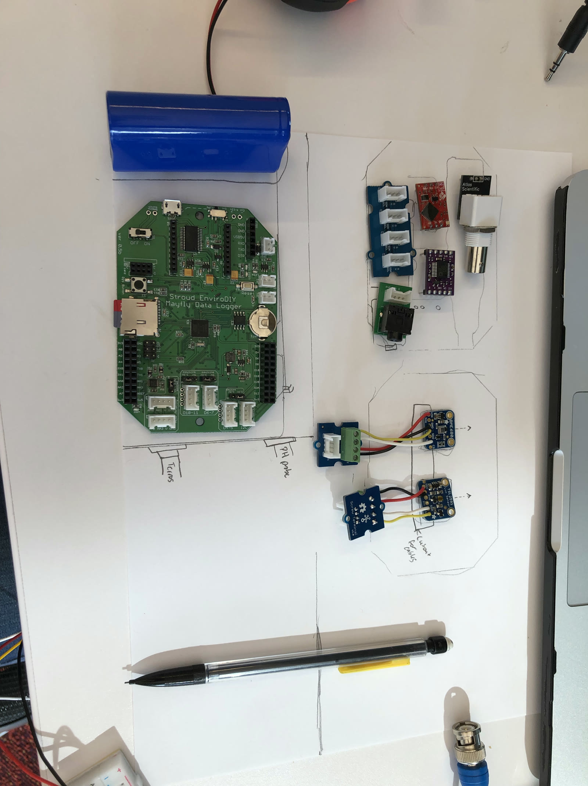

Soil Sensor
A battery-powered soil sensor package in a waterproof enclosure, with probes that go into the ground. Built at Brown in summer 2019.




A battery-powered soil sensor package in a waterproof enclosure, with probes that go into the ground. Built at Brown in summer 2019.



